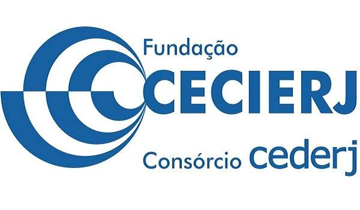

Neste sistema vocês encontrarão as etapas a serem cumpridas e que valem pontos na avaliação final. Caso alguma das etapas não seja cumprida os pontos destinados a mesma serão retirados da nota final.
Etapa 1:
Definição do tema, seleção do tutor do TCC a orientar o trabalho e
definição dos capítulos que comporão o trabalho, em conjunto com o orientador (título e o que será incluído nos capítulos – apenas uma breve descrição) Obs.: não é apenas o resumo, mas o aceite do tema e a seleção do tutor orientador também, portanto antecipem a definição do tema.
(1 ponto).
Etapa 2:
Escrita do capítulo de “trabalhos relacionados” e/ou “um breve histórico relacionado ao tema”, dependendo da estrutura do trabalho e da proposta, geralmente incluído no segundo capítulo
(1 ponto).
Etapa 3:
Restante do trabalho pronto, exceto resumo, introdução, conclusões, trabalhos futuros e detalhes de formatação
(1 ponto).
Etapa 4:
Finalização do trabalho e entrega da versão em formato de edição, ou seja, tudo o que não foi incluído na terceira etapa, (.doc ou .odt)para ser submetido à banca de avaliação (TRABALHO PRONTO PARA SER ENTREGUE PARA A BANCA – DATA FINAL)
(1 ponto).
Etapa 5:
Encerramento do prazo para as bancas de avaliação dos trabalhos.
Etapa 6:
Encerramento dos ajustes propostos pela banca de avaliação e entrega da versão final em PDF para o tutor do TCC orientador e este repassa o pdf para a coordenação da disciplina
(0,9 ponto).
Detalhes sobre as etapas:
- Para cada etapa não cumprida pelo aluno será descontada de sua nota a pontuação da etapa.
- Cumpridas as 6 etapas o aluno terá a nota de 4,9. Cabe aos membros da banca indicar o restante da nota que deverá ser entre 0,0 e 5,1. O tutor orientador fornecerá aos membros da banca a nota alcançada no cumprimento das etapas. A nota final será a média aritmética das notas dos membros da banca, somada à nota acumulada no cumprimento das etapas.
- Caso o aluno não cumpra a sexta etapa, este será reprovado, mesmo que tenha cumprido as demais etapas. Nesse caso, a nota atribuída ao aluno será a soma dos pontos alcançados nas etapas anteriores.
- A banca será formada pelo tutor orientador, um tutor do TCC e/ou um tutor à distância de alguma das disciplinas oferecidas pelo curso (preferencialmente de área relacionada ao tema do trabalho).
- Na sexta etapa caberá ao tutor orientador entregar na secretaria do curso os documentos necessários para a aprovação do aluno com as devidas assinaturas e notas definidas pelos membros da banca.
- Datas limite (FINAIS – INDICAM QUE O ALUNO DEVERÁ TER FINALIZADO A ETAPA ATÉ ESSAS DATAS - o aluno pode entregar antes
– o que é indicado para acelerar o processo de desenvolvimento)
Fonte: Guia do TCC
